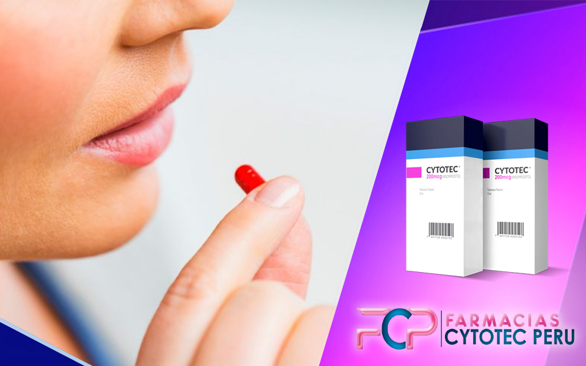

❤️¿Cómo usar mifepristona? 🥇
Entre las pastillas abortivas más utilizadas en todo el mundo se encuentra la mifepristona como un medicamento complementario y que muchas veces hace que el proceso sea más seguro y rápido. Entonces ¿te has preguntado cómo usar mifepristona y donde conseguirla en Perú? ¡Quédate con nosotros!
Para este articulo te explicaremos las consideraciones que debes tomar en cuenta para usar este fármaco y hablaremos sobre su venta en el país. ¡Adelante!
¿Qué es la mifepristona?
Este medicamento también conocido como RU-486 es utilizado para la interrupción de un embarazo. La pastilla abortiva mifepristona actúa deteniendo el crecimiento del bebé en el útero al generar la expulsión del mismo. Por lo general, se usa en combinación con misoprostol (también conocido como Cytotec) para ayudar a garantizar un aborto seguro y exitoso.
Medios para consumir Mifepristona
Lo primero a realizar cuando se desea abortar con la pastilla abortiva mifepristona, es ingerirla por medio oral, sublingual y vaginal. Esta píldora pondrá fin a su embarazo.
La mifepristona debido a ser una hormona sintética, actúa bloqueando la acción de la hormona progesterona, haciendo que el útero tenga menos probabilidad de producir un embarazo. El segundo paso a realizar una vez ingerido el medicamento, es descansar. Esto significa que no se debe levantar objetos pesados, no debe haber actividad vigorosa, incluyendo la actividad sexual. Puede beber líquidos, pero no alimentos sólidos ni calorías. También debe evitar fumar y beber alcohol.Todo esto durante 24 a 48 horas aproximadamente.
Es normal que durante el proceso comience a presentar un poco de calambres, y también un poco de presión sobre su vejiga. Todos estos son efectos secundarios normales del aborto.
Tercer paso, una vez termiando su aborto y el tiempo de descanso indicado,usted es libre de retomar sus actividades con normalidad y hablar con su médico sobre cualquier cuidado después del aborto que pueda necesitar.
¿Qué vas a sentir durante el uso de Misoprostol?
El elegir un metodo con el cual llevar a cabo un aborto, es sinonimo de sentir una variedad de emociones diferentes. La sensación más común es el miedo y alivio a la vez, seguido de calambres y dolor. Pero debes tener en cuenta que estos sentimientos son normales al tomar una decisión de suma importancia como esta. No estás sola y en Farmacias Cytotec estamos para ayudarte.
Si estás está sintiendo miedo , es probable que se deba a la decisión que acabas de tomar, lo cual traerá consigo un alivio y preocupación menos, Si estás experimentando dolor o calambres, debes de tener paciencia, ya que estos son efectos secundarios comunes del Misoprostol. Si te sientes mareada o con náuseas, bebe líquidos y evita comer cualquier cosa que sea pesada.
Si te sientes ansiosa, concéntrate en las técnicas de respiración y relajación. Si estás experimentando cualquier otra emoción, recuerda que estas son todas las reacciones normales al tomar misoprostol. Trata de relajarte y déjate sentir como te sientes.
¿Como saber si el aborto se completo?
Uno de los efectos secundarios claves para saber el el aborto esta efecutandose, se lleva a cabo por medio del sangrado. Es por medio de él, por el que se realiza la expulsión de todo el contenido en el útero.
Una vez que se te indique que el proceso abortivo se terminó , puedes conversar con tu médico a cargo, teniendo en cuenta lo siguiente:
¿Cómo saber si necesito atención médica de urgencia?
Si en pleno aborto comienzas a experimentar alguno de los siguientes síntomas, es posible que debas acudir a la sala de emergencias:
Si experimenta alguno de los siguientes síntomas, es posible que deba ir a la sala de emergencias de inmediato.
¿Que sucede durante un aborto con mifepristona?
La pastilla abortiva mifepristona es un medicamento utilizado en abortos tempranos, es decir, que tienen poco tiempo de gestacion. Su función principal es detener la producción de la hormona que es responsable del embarazo. Esto puede hacer que el aborto se realice más rapido a diferencia de otros metodos a utilizar.
Cuando la mifepristona se usa en abortos tempranos, el aborto generalmente se completa dentro de 10 a 12 horas. Sin embargo, algunas mujeres pueden experimentar calambres y vómitos. Estos efectos secundarios generalmente son leves y generalmente desaparecen en unas pocas horas.
¿Cómo compruebo que la pastilla abortiva funcionó?
Si estás considerando un aborto con pastillas, deberas tener en cuenta:
¿Las pastillas abortivas son seguras?
La respuesta es un rotundo si y muchas mujeres lo han podido comprobar. Las píldoras abortivas son una forma segura y efectiva de interrumpir un embarazo. Sin embargo, como cualquier otro medicamento, se corre cierta intriga sobre sus posibles efectos secundarios. Hay algunos efectos secundarios leves asociados con el uso de píldoras abortivas, pero se resuelven sin ninguna intervención.
Entre los efectos secundarios más comunes de las píldoras abortivas mifepristona , se incluyen: Náuseas, Vómitos, Diarrea y Dolor abdominal. Estos efectos secundarios generalmente son leves y se resuelven sin ninguna intervención. Si persisten o se vuelven graves, deberás comunicarte con tu médico. Otro posible efecto secundario de las pastillas abortivas es el aborto espontáneo.
Esta es una ocurrencia rara, pero puede suceder si la píldora abortiva no se toma correctamente o si hay alguna otra complicación con el proceso de aborto. Si experimenta un aborto espontáneo, debe comunicarse con su médico lo antes posible. En general, las píldoras abortivas son una forma segura y efectiva de interrumpir un embarazo. Si está considerando usar, asegúrese de hablar con su médico sobre todos los posibles efectos secundarios y riesgos.
¿Donde consigo pastillas abortivas en Perú?
Si estás en la búsqueda de unas pastillas abortivas en Perú, es posible que puedas encontrarlas en la ciudad de Lima. Hay algunas farmacias que venden las pastillas, el problema es que solicitan receta médica y para que puedan adquirirlas.
Es importante tener en cuenta que las píldoras abortivas no son legales en Perú, y usted podría ser juzgada si es sorprendida. Por ese motivo por este medio, en farmacias cytotec ofrecemos este medicamento, de forma rapida, segura y con toda la seguridad posible, para que no tengas que exponerte, contamos con delivery completamente gratuito WhatsApp.
Funcionamiento de la mifepristona🥇
En el proceso de interrupción voluntaria del embarazo, la mifepristona funciona de tal forma que detiene por completo el proceso de gestación para que el feto o embrión sea expulsado con la ayuda del misoprostol que produce contracciones uterinas fuertes.
De este modo, este fármaco actúa inhibiendo parcial o completamente la producción de progesterona que está presente para dar continuidad al embarazo y también para ayudar en el proceso de lactancia materna posterior al mismo.
Así pues, al detener la producción de esta hormona también se descontinúa con el proceso gestacional, lo que hace más fácil el siguiente procedimiento con la pastilla cytotec anteriormente explicada.
¿Cómo usar mifepristona?🥇
La forma de usar y la dosis adecuada deben ser especificadas por un médico especializado en ginecología ya que el cuerpo y embarazo de cada paciente es completamente diferente. Sin embargo, la manera más común de usar mifepristona es la siguiente:
- Primeramente, se debe confirmar que la persona se encuentra en el rango de tiempo adecuado de embarazo (por lo general no más de 2 meses después de la última menstruación)
- Luego se le indicará la dosis correcta que comúnmente se trata de 200 mg, pero ésta puede aumentarse si el paciente lo requiere.
- Una vez ingerida, es importante esperar un tiempo prudente (24 horas para ser exactos) y proceder con misoprostol.
- En algunos casos se utiliza posteriormente un análogo de prostaglandina para iniciar con el sangrado y posterior expulsión del embrión.
Algunas recomendaciones antes de usar mifepristonacytotec
Ahora que entendemos mejor cómo usar mifepristona Perú, es necesario que sepas algunas cosas importantes antes de iniciar el proceso abortivo con esta pastilla, veamos:
- Debes tener muy en claro tu fecha de último periodo menstrual, ya que no se debe iniciar el tratamiento con más de 70 semanas de embarazo.
- Antes de consumir mifepristona, asegúrate de tener todo el tratamiento posterior y seguir las instrucciones del especialista para conseguir los resultados esperados.
- Debes presentar el historial de enfermedades y factores de riesgo a tu médico para prevenir cualquier complicación o reacción adversa posible.
Venta de Mifepristona en Perú
El tema de la mifepristona y precio en farmacias Perú no es muy sencillo de abordar, ya que en realidad no está aprobada la venta libre de este medicamento en el territorio nacional, por lo que encontrar, por ejemplo, mifepristona inkafarma no es posible.
Por otro lado, dependiendo de la ciudad en donde te encuentres puedes hallar tiendas online y comercios exteriores que venden este fármaco. Sin embargo, no olvides que a la administración de la mifepristona requiere de receta médica previa.
Ya hemos explicado sobre el funcionamiento usos, precauciones y venta de mifepristona en Perú. En el caso de que estés buscando comprar este medicamento, recuerda que puedes conseguirlo con nosotros, somos de confianza y además hacemos envíos rápidos y seguros. ¡No lo pienses más!